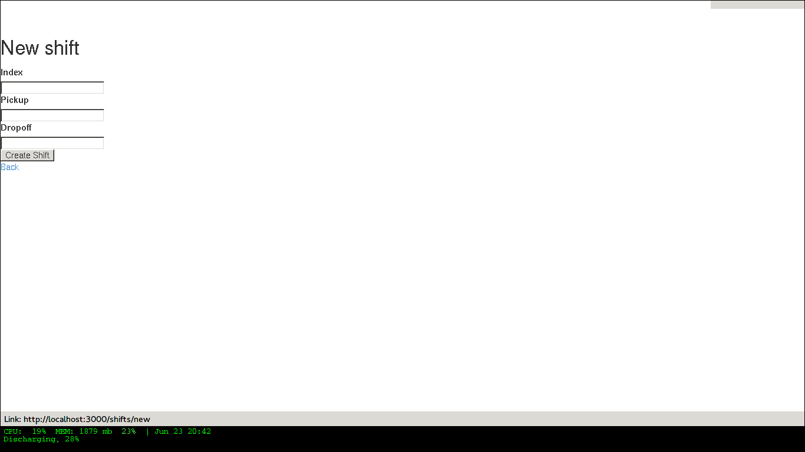

A Generic Scheduler
Scheduler Application
Create a generic application for scheduling a service from a user's phone or computer via the web (ie. delivery (laundry, beer, groceries)
Basic concept
A user, from the web (via mobile or desktop/laptop), visits the application site for a specific service (laundry pickup/delivery), selects a service and a date&time. A request for the service/time is emailed to admin. When approved, a confirmation email is returned and the service is planned for the appropriate time on the business side.
ModelViewControl
Users order and schedule services through a web-based application.
This application displays a calendar and scheduling information along with basic operation information. One or more datetimes are selected from a controlled array of available times for service to be rendered.
Model
Each page will serve as a node for site structure.
A user will have many shifts, associated by id when scheduling requests.
Admin users will have access to greenlighting of scheduling requests.
Page
[X]generate page scaffoldingrails g scaffold Page index
- Additional attributes/columns
[ ]index: string
User
- Devise
[-]Install Devise[X]add Devise gem to Gemfile and bundlegem 'devise' bundle
[X]run the devise generatorrails generate devise:install
This generates a set of further instructions
Some setup you must do manually if you haven't yet:
[X]Ensure you have defined default url options in your environments files../config/environments/development.rb
config.action_mailer.default_url_options = { host: 'localhost:3000' }[X]In production, :host should be set to the actual host of your application../config/environments/production.rb
config.action_mailer.default_url_options = { host: 'gensched.herokuapp.com' }[X]Ensure you have defined rooturl to somethingroot 'pages#index'
[X]Ensure you have flash messages./app/views/layouts/application.html.erb
<p class="notice"><%= notice %></p> <p class="alert"><%= alert %></p>
[X]Copy Devise views (for customization):rails g devise:views
[X]Add Devise to a modelrails g devise MODEL
rails g devise User
[ ]Configure the model[X]Migrate the databaserake db:migrate
- Admin
[ ]create a migration to add admin boolean to User model
Shift
- prebuilt options
While I am very interested in building this from scratch, I knew that there must be something already available as a gem. Enter fullcalendar-rails:
Let's give it a shot.
- Install
[X]installgem 'fullcalendar-rails bundle
[X]require in the appropriate places./app/assets/stylesheets/application.css.scss
*= require fullcalendar
./app/assets/javascripts/application.js
*= require fullcalendar.print
[ ]You can also include the fullcalendar.print file in your css manifest:but as Ray Zane pointed out in issue #11, this will cause a problem if you try to change the colors of events.
An ideal solution, if you need a print stylesheet, is to create an application-print.css.scss file and include this (and other print-related css) in it. You'll then need to add it to the precompile array in ./config/application.rb:
config.assets.precompile += ['application-print.css']
and then in your layouts where you need it, add:
<%= stylesheet_link_tag "application-print", :media => "print" %>
While it's not needed for this library, the original javascript library's author also includes an adapter for integrating Google calendars as an event source:
//= require gcal
- Usage
http://arshaw.com/fullcalendar/
[X]The following script code should be placed in the head of your pagein application page or specific view? Trying in the head of ./app/views/layouts/application.html.erb
<script> $(document).ready(function(){ $('#calendar').fullCalendar({ // put your options and callbacks here }) }); </script>[X]Relies on there being an element with an id of "calendar" in the body of your page. The calendar will be placed inside this div:<div id='calendar'></div>
Attempting this at ./app/views/pages/test.html.erb
After restarting the server, it works!
[ ]To display events:[ ]Using Google Calendarhttp://arshaw.com/fullcalendar/docs/google_calendar/
FullCalendar can display events from a public Google Calendar. It can serve as a backend that manages and persistently stores event data (a feature that FullCalendar currently lacks).
So, this may not be what we want. It would be nice if the scheduled events could just be placed on a Google calendar…
[ ]Using a standard JavaScript object that FullCalendar uses to store information about a calendar event.
- Install
- Generation
[X]Generate Shift scaffoldrails g scaffold Shift index pickup:string dropoff:string
- table
shift id: integer pickup: string? dropoff: string? example 3 Time.now.tof.tos Time.at(Time.now+60).tof.tos 7 Time.at(60*30).tof.tos Time.at(90000000).tof.tos [ ]other attributes?
For user friendliness, needs to be able to be selected by day/date and then time
[ ]use .tof method to retain fractions of a secondTime.now => 2014-06-23 20:02:16 +0000 Time.now.to_i => 1403553736 Time.now.to_f => 1403553736.279851
[ ]convert time to float before string?because the string can be converted back and Time.at(float) will return an actual time that can be used, whereas it seems that a string "2014-06-23 20:02:16 +0000" might not be convertable back to a time?
[ ]use the time module[ ]unsure if this is the appropriate place for it
require 'time'
then
Time.parse('2014-06-23 20:02:16 +0000') => 2014-06-23 20:02:16 +0000
Commercial Exchange
Rails Generation
- Scaffolding
[X]Disable scaffold stylesheet creationconfig.generators do |g| g.stylesheets false end
[X]Generate a scaffoldEXAMPLE
rails g scaffold Page index
[X]migrate the databaserake db:migrate
- Generating a Model
Service
For now, I think it would make sense to look at it simply, accounting for a single service that can be scheduled.
View
Skrollr
[ ]add skrollr script[ ]application.js
Bootstrap-sass
[X]Create custom bootstrap stylesheet./app/assets/stylesheets/bootstrap_and_customization.css.scss
echo "@import 'bootsrap';" > app/assets/stylesheets/bootstrap_and_customization.css.scss
NOTE Place new variables before "@import 'bootstrap'"
[X]FontsEXAMPLE:
@import url(http://fonts.googleapis.com/css?family=Roboto:400,100,100italic,700italic,700|Clicker+Script);
[X]Variables$phill-grn: #3f8000;
[X]Require Bootstrap's Javascript, after jqueryujs./app/assets/javascripts/application.js
//= require jquery //= require jquery_ujs //= require bootstrap //= require turbolinks //= require_tree .
Assets
- Stylesheets
- Javascripts
[X]Replace turbolinks with jquery-turbolinksapp/assets/javascripts/application.js
app/assets/javascripts/application.js
[X]remove turbolinks line//= require turbolinks
[X]add jquery.turbolinks under bootstrap//= require bootstrap //= require jquery.turbolinks
- Images
[ ]css background images
Views
- Application
[X]add viewport./app/views/layouts/application.html.erb
<meta name="viewport" content="width=device-width, intial-scale=1.0">
- Pages
- Home
- Home
- Layouts
- Partials
Control
Routes
Other required services
Set up a mailer
commerce exchange
Application skeleton BASICS
Useful commands
Rake
rake routes
Rails
rails console
Essential Files
the following has now been defaulted into
DEV:edit ./rails-new.sh
Create the default skeletal application
[X]create scheduler applicationrails new scheduler
[X]update READMErm README.rdoc touch README.org
[X]copy generic rails scriptFor documentation and testing purpose of developing my default rails new bash script
ln -s $HOME/bin/rails-new.sh rails-new.sh cp $HOME/bin/rails-new.sh rails-new
[X]rename application.css to application.css.scsscd app/assets/stylesheets mv application.css application.css.scss
[X]Test the skeletal application[X]Start the Rails server
rails s
[X]open your browser to localhost, port 3000localhost:3000
[X]update the Gemfilecat ~/RAILS-dev/DEFAULT-Gemfile > Gemfile
[X]update the bundlebundle update bundle install --without production
Set up Git and Heroku
- Git
[X]initialize git repogit init
[X]update .gitignoreecho ".env" >> .gitignore echo "Procfile" >> .gitignore
[X]initial stage and commit of all filesgit add . git commit -am "initial commit"
[X]add the origingit remote add origin https://github.com/son1112/scheduler.git
[X]initial pushgit push -u origin master
- Heroku
[X]Create and push a new heroku appheroku create git push heroku master
[X]Rename the heroku appheroku rename gensched